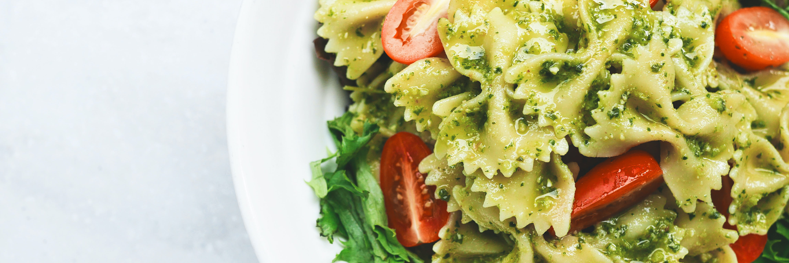

El objetivo de esta sección es demostrarte lo simple que es comer siendo una persona vegana. En realidad, la alimentación vegetariana estricta, es tan simple, compleja, cara o barata como cualquier otro tipo de alimentación, dependiendo de qué cosas quieras comer, en qué cantidad, si cocinás o si comprás todo hecho y en lugares gourmet, etc. Depende de vos que sea de una forma u otra!
Esta receta es bastante fácil, lo más complicado que encontrarás será el momento del rebozado y salteado -que en realidad no es nada difícil-.
Te aconsejamos que para acompañarlo hagas unas papas especiadas al horno y la combinación será brutal.
La textura y el plato es más cercano a una albóndiga vegetal, pero la parte externa es ligeramente más crujiente de como las albóndigas suelen ser.